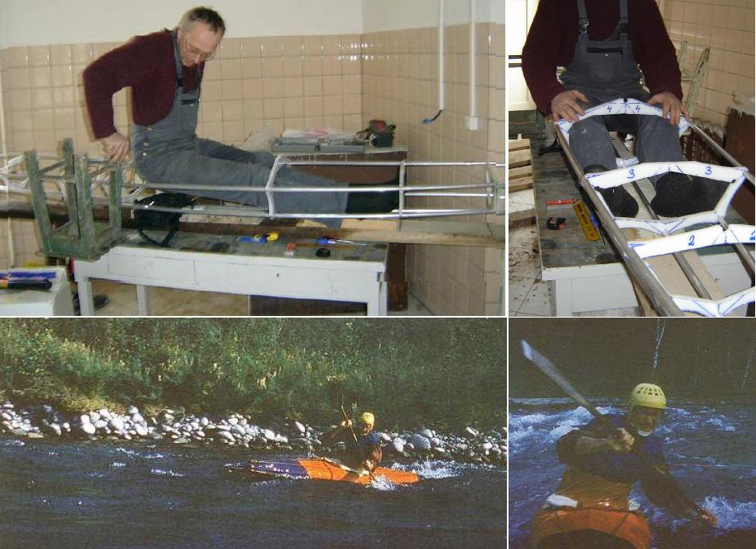

| Sea Raider LC by Verners Berzins | Menu Previous Page Next Page |
|
 Top - Verners Berzins of Riga, Latvia trial fitting into his Sea Raider LC frame. Bottom - Verners in 1988 paddling the Katun and Niznij Kuragan rivers of southern Siberia. His kayak is a homebuilt whitewater folder of Russian design. Russian folders of this type are characterized by aluminum tubing frames, PVC skins, and large sponsons. |
|